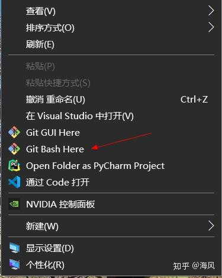
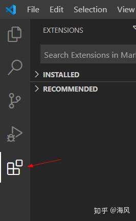
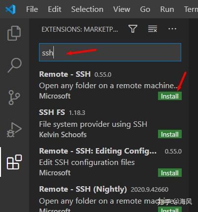
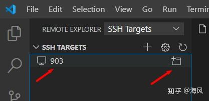
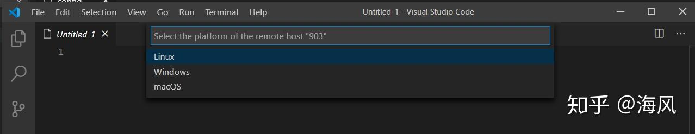

远程部署：在Windows/Mac/Ubuntu上写程序，运行在服务器上
在学习深度学习的时候，我们所找到的开源项目一般都是linux环境下运行的，且一般都需要计算机的性能较高。但直接在linux机器写代码和调试又不太方便，且高性能计算机可能属于多个人共用。这时候在windows下写程序+部署到服务器上运行是一个好的解决办法，但每次修改程序后都需要手动同步到服务器上，且使用命令行调试需要较好的编程基础。
在这里整理两个在自己电脑上写程序，让程序在服务器上运行的小技巧。(这里以python为例)
这是 2020 年的历史笔记。界面、版本与授权以现在实际安装的版本为准；部分包含机器信息的原截图用示例替代。
环境准备
Ubuntu 或 Mac 下默认有 SSH。原文在 Windows 下先用了 WSL，后来改用 Git 客户端附带的 Git Bash 来执行命令和编辑配置。
Windows 进入 Git 官网下载安装，装完后桌面右键会有 Git 选项。

SSH 生成密钥、创建 config 配置文件
Windows 在桌面右键打开 Git Bash Here，Mac 或 Ubuntu 打开终端。输入：
ssh-keygen按提示选择生成的位置和口令。进入 .ssh 目录（Windows 是 C:\Users\你的用户名\.ssh，Mac 和 Ubuntu 是 ~/.ssh），创建没有后缀的 config。下面用文档示例地址替换原截图中的信息：
Host 903
HostName 192.0.2.10
User example-user使用命令将本地公钥复制到服务器（服务器需先开启 SSH 服务）：
ssh-copy-id -i id_rsa.pub 903这里需要将 903 换成你的自定义服务器名称；id_rsa.pub 换成刚生成的公钥文件。第一次连接先核对主机指纹，再继续，随后按提示使用服务器账号完成认证。
准备工作完成，接下来开始配置环境（默认已有一台 Linux 服务器且已安装好 Python 环境）。如果没有正常添加 SSH key，可按管理员要求将公钥加到服务器的 ~/.ssh/authorized_keys，不要复制私钥。
方法一：VS Code + Remote 插件
在 Windows 上通过浏览器下载并安装 VS Code。
点击左侧扩展按钮，搜索 SSH，安装 Remote-SSH。原版本重启后会出现远程登录插件的小标。


点击设置按钮，选中刚才配置的 config 文件作为配置文件，左侧即可出现自定义的服务器名称，点击右侧的小按钮即可连接到服务器。第一次登录选择平台，选 Linux。


连接后，点击 Open Folder，打开的是服务器上的文件夹。
接下来就和 VS Code 在本地使用一样，安装 Python 插件，写程序、运行、调试等等，这里不再详细说明。Mac 和 Ubuntu 上的流程类似。
方法二：PyCharm 专业版使用 Deployment
原文使用的是当时的 PyCharm 专业版。关于学生和教师的授权，可参见原文引用的教程，实际以 JetBrains 的条款为准。
使用 PyCharm 新建项目，Interpreter 选 Existing interpreter，点击右边的三个小点。
选中 SSH Interpreter，Host 填服务器地址，Username 填登录用户名。第一次连接时先核对主机指纹。
这里选择 Python 解释器的路径。如果使用 Anaconda 安装好了深度学习环境，可以从默认的 /usr/bin/python 改到环境里的 Python，例如 /home/example-user/anaconda3/envs/py36/bin/python。Remote project location 代表程序在服务器上的存放位置，可自行修改，点击 Create 创建项目。
确认右下角解释器已经指向服务器。写好程序后，使用 Tools->Deployment->Upload 把本地项目部署到服务器上。上传后右键运行，可以看到程序是在服务器上执行的。
Mac 和 Ubuntu 操作类似。
（完）
本文首次发布于知乎，查看知乎原文。